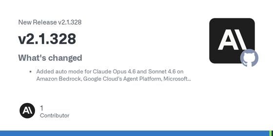
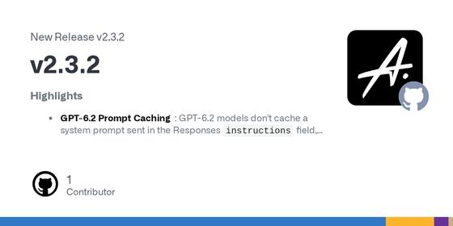
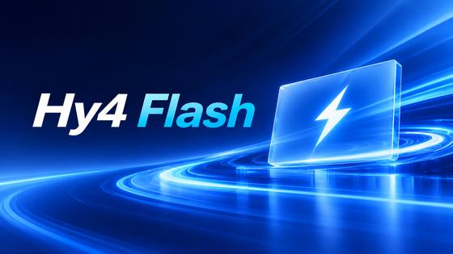
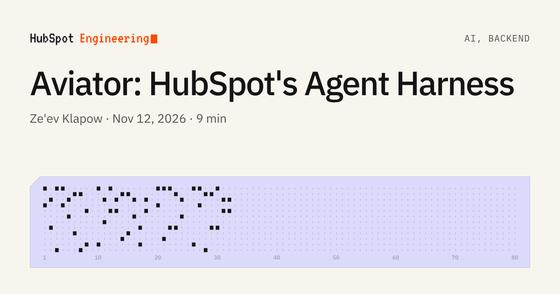
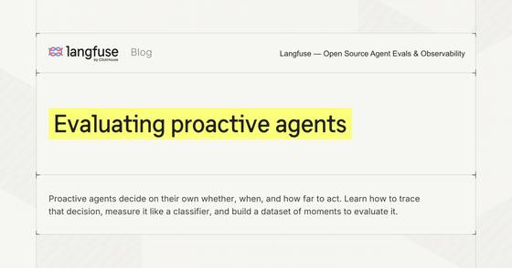
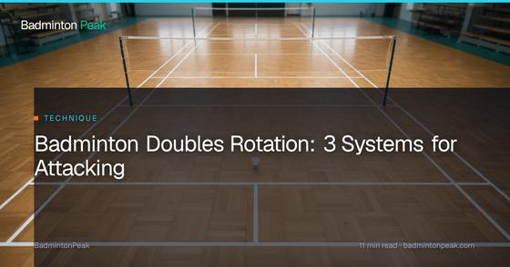
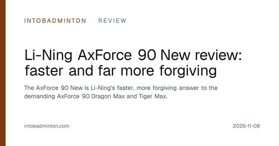

📍 San Jose: 54° / 47°F, Heavy rain
⏱ ~63 min reading
110 items
|
The Morning Brief
Executive Personal Intelligence Briefing
|
Thursday, November 19, 2026
Sunrise 06:51 · Sunset 16:54 · AQI 34 · Moon: Waxing gibbous, 77% lit
|
|
Executive Synthesis: Wall Street volatility spikes to 28.44 as AI infrastructure unwinds, even as Anthropic completes a record IPO, foreign capital floods Dalal Street, and agent engineering shifts toward verifiable harnesses.
Don't Miss
 Anthropic Completes Largest IPO in History, Closing Up 17% Amid Tech Selloff
Anthropic Completes Largest IPO in History, Closing Up 17% Amid Tech Selloff
—
AI developer Anthropic completed the largest initial public offering in history on Thursday, November 19, debuting on the Nasdaq under ticker ANT. Shares opened at $111.50, up 34% from their $83.00 offer price, and peaked at $114.99—implying a valuation above $2 trillion—before paring gains in the afternoon selloff to close at $97.17 (+17%). While the landmark listing drew intense institutional capital and validated frontier-model demand, it failed to arrest a 2.3% Nasdaq drop as investors rotated out of legacy software and scrutinized capital intensity across hyperscalers and AI infrastructure.
Takeaway: Anthropic's debut directly tests capital rotation across your Microsoft, Alphabet, TSMC, and DigitalOcean holdings as well as your Adobe LEAPS exposure.
 FII Monthly Inflows Smash Record Above ₹1.01 Lakh Crore as Thursday Buying Hits ₹7,411 Crore
FII Monthly Inflows Smash Record Above ₹1.01 Lakh Crore as Thursday Buying Hits ₹7,411 Crore
—
Foreign Institutional Investors (FIIs) logged net equity purchases of ₹7,411.41 crore on Thursday, November 19, extending their buying streak to 14 consecutive sessions and pushing cumulative November FII inflows past ₹1.01 lakh crore across 19 sessions—the largest single-month haul on record, eclipsing November 2020's ₹70,896 crore. Domestic Institutional Investors (DIIs) booked profits with ₹1,356.57 crore in net selling. Alongside softer copper, aluminium, and crude oil prices, foreign liquidity propelled Nifty Auto (+4.4%), Consumer Durables (+3.6%), PSU Bank (+2.3%), and Nifty Bank (+1.7%), while Nifty IT slipped roughly 1.1%.
Takeaway: Sustained record FII inflows offset domestic profit-taking and support your Uptrend India book even while US yields stay elevated above 5%.
Trump, Xi, and Putin hold Shenzhen trilateral summit and issue joint peace declaration without Ukraine breakthrough
—
US President Donald Trump, Chinese President Xi Jinping, and Russian President Vladimir Putin held an unprecedented 90-minute trilateral summit on the sidelines of APEC in Shenzhen, exceeding its scheduled one-hour slot. The leaders discussed nuclear stockpile reductions and the war in Ukraine, with Xi calling for eliminating nuclear weapons and respecting red lines. While Chinese and Russian media previewed a joint statement, analysts noted no concrete agreements were publicly announced on the core disputes.
Takeaway: Directly tracks major-power realignment across the US, China, and Russia for your geopolitics and world affairs watch.

Claude Code v2.1.328 adds auto mode on cloud gateways and MCP hook failure blocking
—
Anthropic shipped Claude Code v2.1.328 with auto mode support for Claude Opus 4.6 and Sonnet 4.6 across Amazon Bedrock, Google Cloud's Agent Platform, Microsoft Foundry, and the Claude apps gateway, with interactive sessions lacking a permission mode now starting in auto mode. The release adds "onFailure": "block" for mcp_tool hooks, warns in /status and claude doctor when an OpenTelemetry exporter lacks an endpoint, and adds CLAUDE_CODE_DISABLE_DEFERRED_TOOL_RESUME alongside fixes for MCP schema handling and Code Mode scripts.
Takeaway: Directly impacts your Claude Code harness, MCP hook guardrails, and OpenTelemetry trace diagnostics.
 Does the Judge See What the Evaluation Requires? Input Assurance for LLM Agent Evaluation
Does the Judge See What the Evaluation Requires? Input Assurance for LLM Agent Evaluation
—
Authors from Adelaide University, CSIRO, and UNSW Sydney expose silent failure modes in the trace-rendering and checking pipeline before an LLM judge ever scores an agent step. Auditing a 30-trajectory pipeline, they found matching hashes and passing checkers coexisted with omitted structured tool calls that left 53 of 60 judged steps blank; restoring tool calls cut one judge's later-context contrast from 13 to 2 (a 0.37 per-trajectory shift). Three added controls implementing four proposed input-assurance obligations blocked 18 of 19 constructed fault cases. Limitation: transferability of the four tests to external pipelines remains unmeasured.
Takeaway: Directly protects your LLM-as-judge and trace-evaluation pipelines: add schema assertions confirming rendered judge packets actually preserve tool calls and match the exact bytes checked.
Cyclone Akvan Track Shifts North Toward Odisha as 3 Lakh Evacuate Ahead of Landfall
—
Following earlier reports ("Cyclone Akvan projected to cross Andhra coast between Nellore and Tuni on November 20" and "Cyclone Akvan Intensifies Into Severe Cyclonic Storm; Andhra Pradesh Placed on Red Alert"), the IMD updated Akvan's landfall corridor northward to cross between Narsapur and Puri, near Gopalpur, by noon Friday, November 20. Odisha evacuated over 3 lakh people and deployed 423 rescue teams. In Andhra Pradesh, Srikakulam and Vizianagaram remain under red alert, East Coast Railway cancelled 41 trains and rescheduled 29, and South Eastern Railway cancelled at least 28 express trains.
Takeaway: Follows your Andhra Pradesh and regional infrastructure interest as the storm track shifts toward North Coastal Andhra and southern Odisha.
Rakshitha Ramraj stuns Olympic champion Chen Yu Fei as Satwik-Chirag reach Hong Kong Open quarterfinals
—
Nineteen-year-old Indian shuttler Rakshitha Sree Santhosh Ramraj delivered the upset of the Hong Kong Open Super 500 on Thursday, knocking out Tokyo Olympic champion and world No. 4 Chen Yu Fei 21-18, 24-22 in straight games to reach a quarterfinal against Thailand's Pornpawee Chochuwong. In men's doubles, fifth seeds Satwiksairaj Rankireddy and Chirag Shetty defeated Malaysia's Nur Mohd Azriyn Ayub and Tan Wee Kiong 21-19, 21-16 in 42 minutes to set up a meeting with China's Hu Ke Yuan and Lin Xiang Yi, while Treesa Jolly and Gayatri Gopichand exited in women's doubles.
Takeaway: Follows Satwik-Chirag and India's emerging singles talent in this week's BWF World Tour Super 500 draw.
Six verified 48-hour developments on stories we tracked earlier this week: Cyclone Akvan's northward shift, Moody's outlook cut on Nvidia, Panama's COP31 veto threat, the Shenzhen summit's nuclear statement, San Francisco's 108-year rainfall record, and Hong Kong Open quarterfinals.
Cyclone Akvan Track Shifts North Toward Odisha as 3 Lakh Evacuate Ahead of Landfall
—
Following earlier reports ("Cyclone Akvan projected to cross Andhra coast between Nellore and Tuni on November 20" and "Cyclone Akvan Intensifies Into Severe Cyclonic Storm; Andhra Pradesh Placed on Red Alert"), the IMD updated Akvan's landfall corridor northward to cross between Narsapur and Puri, near Gopalpur, by noon Friday, November 20. Odisha evacuated over 3 lakh people and deployed 423 rescue teams. In Andhra Pradesh, Srikakulam and Vizianagaram remain under red alert, East Coast Railway cancelled 41 trains and rescheduled 29, and South Eastern Railway cancelled at least 28 express trains.
Takeaway: Follows your Andhra Pradesh and regional infrastructure interest as the storm track shifts toward North Coastal Andhra and southern Odisha.
 Nvidia Extends Six-Day Wipeout to $669 Billion After Moody's Cuts Credit Outlook
Nvidia Extends Six-Day Wipeout to $669 Billion After Moody's Cuts Credit Outlook
—
Following Wednesday's coverage ("Nvidia Reverses Post-Earnings Pop to Close Down 2.89% at $150.96 on Succession and China Risks" and "Nvidia Board Closes Door on Jensen Huang Return After Q3 Earnings Beat"), Nvidia shares fell another 3.3% Thursday to complete a six-day, 16% slide that erased $669 billion in market capitalization. The drop followed Moody's Ratings revising Nvidia's credit outlook from positive to stable on Wednesday, flagging governance uncertainty from Jensen Huang's abrupt resignation and the board's ongoing independent investigation.
Takeaway: Directly tracks NVDA in your US equities and AI infrastructure coverage as post-earnings governance uncertainty continues driving multi-session volatility.
COP31 Second Draft Drops All Fossil Fuel Mentions, Prompting Panama Veto Threat
—
Reversing Tuesday's initial cover text ("COP31 First Draft Cover Text Proposes Fossil Fuel Phaseout and $120B Adaptation Goal"), the Turkish and Australian presidencies released a halved nine-page second draft on Thursday afternoon that removes every mention of fossil fuels and drops the phaseout pledge. The draft replaces transition language with a broader low-emissions pledge and lacks concrete finance delivery mechanisms for developing nations. Panama's environment minister formally warned the presidencies it will block any consensus outcome unless its demands are met.
Takeaway: Connects to your geopolitics and global energy policy tracking as COP31 enters final-hours negotiations without fossil fuel transition commitments.
Enterprise agent platforms consolidate around Microsoft-Salesforce Copilotforce and Azure AI Gateway, while Claude Code v2.1.328, OpenCode v2.3.2, and Arena's 2.9-million-session Agent Arena Index sharpen the tooling and evaluation landscape.
Claude Code v2.1.328 adds auto mode on cloud gateways and MCP hook failure blocking
—
Anthropic shipped Claude Code v2.1.328 with auto mode support for Claude Opus 4.6 and Sonnet 4.6 across Amazon Bedrock, Google Cloud's Agent Platform, Microsoft Foundry, and the Claude apps gateway, with interactive sessions lacking a permission mode now starting in auto mode. The release adds "onFailure": "block" for mcp_tool hooks, warns in /status and claude doctor when an OpenTelemetry exporter lacks an endpoint, and adds CLAUDE_CODE_DISABLE_DEFERRED_TOOL_RESUME alongside fixes for MCP schema handling and Code Mode scripts.
Takeaway: Directly impacts your Claude Code harness, MCP hook guardrails, and OpenTelemetry trace diagnostics.

OpenCode v2.3.2 fixes GPT-6.2 prompt caching across all Responses API routes
—
OpenCode v2.3.2 resolves a costly caching bug where GPT-6.2 models failed to cache system prompts placed in the Responses API instructions field, re-billing them on every step. OpenCode now sends the system prompt as a leading developer message across OpenAI, GitHub Copilot, Zen, Azure, and OpenRouter routes, cutting uncached input per step on GitHub Copilot gpt-6.2-sol from roughly 14,000 tokens to 3. Compaction via /responses/compact reuses the cached prefix, and webfetch stops repeating arguments.
Takeaway: Removes a major hidden token-cost multiplier when running GPT-6.2 models inside OpenCode.
Microsoft and Salesforce launch Copilotforce to connect CRM context with Microsoft 365
—
Unveiled at Microsoft Ignite on November 17, the Copilotforce partnership links Salesforce customer workflows with Microsoft Copilot, Teams, and Fabric. A Salesforce in Copilot plugin enters public preview with 38+ prebuilt sales skills—such as Pipeline Review and Close Planning—using authenticated Salesforce MCP access inside existing CRM permissions. Two-way Zero Copy integrations between Salesforce Data 360 and Microsoft Fabric avoid dataset duplication, with Accenture serving as design partner and pilot customer across its global sales organization.
Takeaway: Major enterprise agent-platform move showing MCP-based interoperability between Microsoft Copilot and Salesforce.
Microsoft Foundry Agent Service previews Copilot harness and takes voice agents GA
—
At Ignite 2026, Microsoft expanded Foundry Agent Service across build, deploy, and operate workflows. The Microsoft Copilot harness enters public preview as a managed runtime handling the agent loop and sandbox for long-running prompt agents, authorable in Foundry UI, GitHub Copilot, azd ai, or VS Code. Voice agents reached general availability with barge-in interruption handling and native telephony, alongside preview Work IQ and Fabric IQ integrations for enterprise context.
Takeaway: Directly tracks managed agent harnesses and GA real-time voice agent runtimes for enterprise workloads.
Arena launches Agent Arena Index across 2.9M real sessions; Claude Fable 5.2 leads at 1463
—
Independent evaluation platform Arena (formerly LMArena) launched its Agent Arena Index alongside six specialized indexes—including Agentic Work and Coding—built on causal tracing across more than 2.9 million real user sessions collected since June 4, 2026. The benchmark scores agents on task completion, user satisfaction, Bash reliability, and mid-task steerability. Anthropic's Claude Fable 5.2 (Max) leads the main index at 1463 by a 134-point margin, with Anthropic, Google DeepMind, OpenAI, Meta, and Alibaba topping the lab ranking.
Takeaway: Adds an independent, session-trace agent leaderboard directly aligned with your agent evaluation and observability work.

Tencent's open-weight Hy4 flash logs 50T first-day tokens at $0.07/$0.30 per 1M tokens
—
Tencent reported that its open-source Hunyuan Hy4 flash model processed over 50 trillion tokens in its first day after launching November 16 and ranked #1 on OpenRouter's daily LLM leaderboard on November 17. Built with a hybrid activation architecture of 224B total parameters (including 64B Engram parameters) and 12B active parameters, it supports a 1M-token context window, ~200 tok/s generation speed (vendor-reported), and API pricing of $0.07 per million input tokens ($0.003 cached) and $0.30 per million output tokens.
Takeaway: Highlights ultra-low-cost open-weight hybrid models competing for high-volume subagent and background loops.
Fourteen papers and engineering notes on what actually makes production agents reliable: judge-input assurance, proactive agent evals, adaptive LLM serving, self-evolving memory, and System-1 decision routing.
The Resolution Hypothesis: Agent Evolution's Key Is Identifying Improvements
—
Trending on Hugging Face Daily Papers with 35 upvotes on November 19, this ShanghaiTech University study investigates why automated prompt, skill, memory, and harness evolution methods trade wins and stall. Evaluating seven evolution methods (including GEPA, SkillOpt-Lite, and Meta-Harness) across six models and over 10 million LLM calls, the authors find candidate selection distinguishes better artifacts only 49.7% of the time (rank correlation 0.054 with posterior quality), while regressions form 30.5% of the pool yet 62.1% of accepted edits. Limitation: experiments cover frozen-weight text and harness evolution, leaving RL weight updates and deterministic program evolution untested.
Takeaway: Directly targets your GEPA prompt-optimization and evaluation work: noisy single-run evals admit regressions no better than random selection, so invest in variance-reduced scoring before scaling evolution loops.
SO-Arena: Benchmarking the Capability Spectrum and Reliability of System One Models
—
Trending on Hugging Face Daily Papers with 71 upvotes (submitted November 13), this National University of Singapore benchmark measures both capability and decision reliability in fast non-reasoning System One models across 11 domains and interactive sandboxes. Across 21 evaluated models, open-weight System One models respond within 0.3 seconds per task on one H100 GPU, yet top System One models (GLiDE, KnowLine-31B) trail GPT-6 Luna by about ten points, and the highest-scoring System One model ranks only seventh in reliability (while JevAny-27B and Jev API 1.14 lead reliability despite ranking eighth and sixth in performance). Limitation: missing-option recognition varies sharply even among peers.
Takeaway: If you use lightweight decision or routing models in an agent harness, evaluate option-order stability and null discrimination alongside speed rather than relying on aggregate accuracy alone.
Evolving Infra: Agent-Adaptive LLM Serving at Scale
—
Co-authored by Hao Kang, Ion Stoica, Song Han, and colleagues (code released under mit-han-lab/EvolvingInfra), this paper addresses load imbalance and KV cache thrashing in agentic LLM serving. By decoupling compute allocation from a cluster-wide shared host-memory KV pool and guiding eviction with agent context-branch counts, symmetric nodes switch between prefill and decode in 6.2 seconds on average without dropping cached prefixes. On up to 256 GB300 GPUs (and 3,072 simulated), Evolving Infra cuts mean end-to-end latency up to 4.12x and P95 TTFT up to 14x over NVIDIA Dynamo while losing 81–95% less KV reuse. Limitation: phase-split routing relies on runtime-fitted iteration models tested on specific coding, math, and computer-use mixes.
Takeaway: Directly applicable to your agent-runtime and inference work: propagating context-compaction and subagent-completion signals to the KV directory prevents costly prefix recomputation.

Aviator: HubSpot's Agent Harness
—
HubSpot engineer Ze'ev Klapow details Aviator, the shared Java agent harness powering Breeze Assistant and internal engineering agents in under 20 lines of setup code. To avoid duplicating context, caching, and tool bugs across teams, Aviator standardizes a provider-agnostic JSON transcript (allowing mid-conversation model switching and durable checkpointing), deferred RPC Tool Search scaling past 3,000 tools, SKILL.md manifests with load-tools metadata, and WASM-embedded Python/Bash sandboxes over a virtual filesystem. HubSpot reports Sidekick Code on Aviator now merges over 2,500 pull requests per week. Limitation: the post omits deployment counts and defers virtual-filesystem and eval details to follow-ups.
Takeaway: Concrete production reference for your agent harness engineering: storing a provider-agnostic transcript turns conversation history into both a durable execution log and a cross-model handoff format.
Does the Judge See What the Evaluation Requires? Input Assurance for LLM Agent Evaluation
—
Authors from Adelaide University, CSIRO, and UNSW Sydney expose silent failure modes in the trace-rendering and checking pipeline before an LLM judge ever scores an agent step. Auditing a 30-trajectory pipeline, they found matching hashes and passing checkers coexisted with omitted structured tool calls that left 53 of 60 judged steps blank; restoring tool calls cut one judge's later-context contrast from 13 to 2 (a 0.37 per-trajectory shift). Three added controls implementing four proposed input-assurance obligations blocked 18 of 19 constructed fault cases. Limitation: transferability of the four tests to external pipelines remains unmeasured.
Takeaway: Directly protects your LLM-as-judge and trace-evaluation pipelines: add schema assertions confirming rendered judge packets actually preserve tool calls and match the exact bytes checked.

Evaluating proactive agents
—
Published today by Langfuse's Annabell Schäfer, this engineering essay tackles evaluation and observability for background proactive agents that wake on triggers and decide whether, when, and how far to act. Because silent no-op runs lack user feedback, the post prescribes tracing every decision step (including cheap pre-filters and memory context), keeping 'do nothing' traces in review queues, scoring precision, recall, and action-depth errors asymmetrically like a classifier, and curating datasets of trigger moments paired with memory snapshots. Limitation: it is a conceptual framework without empirical benchmark numbers, requiring teams to instrument production dismissal and undo signals.
Takeaway: Directly relevant to your Langfuse observability and scheduled-agent work: log silent 'do nothing' decisions and pre-filter stages so low-recall misses do not go invisible.
Wall Street Suffers Sixth Straight Drop as S&P 500 Slides 2.02% and Dow Loses 1,100 Points
—
US equities extended their losing streak to six consecutive sessions on Thursday, November 19, confirming a broad Downtrend with eight distribution days over the past 25 sessions. The Dow Jones Industrial Average dropped 2.19% (over 1,100 points) to 49,097.06, the S&P 500 fell 2.02% to 7,175.83 (-5.49% 1W), and the Nasdaq-100 slid 2.21% to 26,517.05, while the Russell 2000 fell 2.18% to 2,655.11. Selling broadened beyond tech as Industrials fell 2.61% and AMD dropped 7.72%, while defensive Consumer Staples (+0.04%) and Energy (+0.14%) held near flat despite the 10-year Treasury yield easing slightly to 5.07%.
Takeaway: Your US portfolio runs a 2.44 weighted beta across eight lockstep AI-beta positions (34.3% of net worth) inside a Stage 1/Stage 4 tape where only 41.7% of stocks remain above 50-day support.
Anthropic Completes Largest IPO in History, Closing Up 17% Amid Tech Selloff
—
AI developer Anthropic completed the largest initial public offering in history on Thursday, November 19, debuting on the Nasdaq under ticker ANT. Shares opened at $111.50, up 34% from their $83.00 offer price, and peaked at $114.99—implying a valuation above $2 trillion—before paring gains in the afternoon selloff to close at $97.17 (+17%). While the landmark listing drew intense institutional capital and validated frontier-model demand, it failed to arrest a 2.3% Nasdaq drop as investors rotated out of legacy software and scrutinized capital intensity across hyperscalers and AI infrastructure.
Takeaway: Anthropic's debut directly tests capital rotation across your Microsoft, Alphabet, TSMC, and DigitalOcean holdings as well as your Adobe LEAPS exposure.
VIX Surges to 28.44 as Repeated Volatility Snapbacks Keep Options Hedging Expensive
—
Wall Street's volatility regime has turned erratic in November, with the Cboe Volatility Index (VIX) swinging from 16.61 on November 4 to 28.18 on November 5, easing back to 17.49 by November 11, then climbing to 25.46 on November 17 and 24.56 on November 18 before surging 15.80% on Thursday, November 19 to 28.44 (+52.09% 1W). Elevated 10-year Treasury yields (moving from 4.84% to 5.15% earlier in the month and holding near 5.07%) have kept index option implied volatility and downside protection demand firm across the 20–30 uncertainty band.
Takeaway: Tracking VIX above 28 alongside your UBER and ADBE LEAPS and 2.44 portfolio beta helps gauge whether hedging costs and Stage 4 markdown risk warrant trimming exposure.
Sensex Jumps 990 Points and Nifty Reclaims 25,514 on Nov 19 Auto and Bank Rally
—
Rebounding sharply from Wednesday, November 18's pullback (when Nifty closed at 25,227.95, Sensex at 82,031.81, and India VIX at 15.57), Indian equities surged to nine-month highs on Thursday, November 19. The BSE Sensex jumped 989.94 points (+1.21%) to 83,021.75 and the NSE Nifty 50 climbed 286.35 points (+1.14%) to 25,514.30, with BSE advance-decline breadth at 2,410 gainers versus 1,982 decliners. BSE Auto jumped 3.98% led by Maruti Suzuki (+7.58%) and M&M (+4.78%) on softer industrial metals, while PSU Bank (+2.43%) and Capital Goods (+1.77%) rallied and IT stocks lagged.
Takeaway: Your India portfolio entered Thursday with a conservative 0.54 weighted beta and zero 0.60+ return-correlation overlap, benefiting from Thursday's breadth recovery into capital goods and autos.
FII Monthly Inflows Smash Record Above ₹1.01 Lakh Crore as Thursday Buying Hits ₹7,411 Crore
—
Foreign Institutional Investors (FIIs) logged net equity purchases of ₹7,411.41 crore on Thursday, November 19, extending their buying streak to 14 consecutive sessions and pushing cumulative November FII inflows past ₹1.01 lakh crore across 19 sessions—the largest single-month haul on record, eclipsing November 2020's ₹70,896 crore. Domestic Institutional Investors (DIIs) booked profits with ₹1,356.57 crore in net selling. Alongside softer copper, aluminium, and crude oil prices, foreign liquidity propelled Nifty Auto (+4.4%), Consumer Durables (+3.6%), PSU Bank (+2.3%), and Nifty Bank (+1.7%), while Nifty IT slipped roughly 1.1%.
Takeaway: Sustained record FII inflows offset domestic profit-taking and support your Uptrend India book even while US yields stay elevated above 5%.
 Cyient Semiconductors Lands $10M Strategic Equity Investment From GlobalFoundries at $510M Valuation
Cyient Semiconductors Lands $10M Strategic Equity Investment From GlobalFoundries at $510M Valuation
—
Cyient subsidiary Cyient Semiconductors announced on Thursday, November 19 that it has secured a $10 million strategic equity investment from foundry giant GlobalFoundries at a $490 million pre-money valuation—matching its recent Edelweiss-led round for a $510 million post-money valuation. Based in Hyderabad with design centers across India, Belgium, and the US, the unit will deploy the capital to expand turnkey custom ASIC engineering and lock in long-term wafer supply resilience across automotive, industrial, AI, communications, and data center customers. CYIENT closed Wednesday, November 18 at ₹1,086.40, 1.9% above ₹1,065.80 support.
Takeaway: CYIENT is an active Zerodha holding testing ₹1,065.80 support, and GlobalFoundries' equity backing validates its custom-silicon moat and wafer access.
Latest Radar
MarketWatch / Morningstar:
GitHub (anthropics/claude-code):
GitHub (anomalyco/opencode):
Eventbrite / Open Space Authority:
Trump, Xi, and Putin hold Shenzhen trilateral summit and issue joint peace declaration without Ukraine breakthrough
—
US President Donald Trump, Chinese President Xi Jinping, and Russian President Vladimir Putin held an unprecedented 90-minute trilateral summit on the sidelines of APEC in Shenzhen, exceeding its scheduled one-hour slot. The leaders discussed nuclear stockpile reductions and the war in Ukraine, with Xi calling for eliminating nuclear weapons and respecting red lines. While Chinese and Russian media previewed a joint statement, analysts noted no concrete agreements were publicly announced on the core disputes.
Takeaway: Directly tracks major-power realignment across the US, China, and Russia for your geopolitics and world affairs watch.
Tanker hit near Oman and Beqaa struck as Pentagon puts Iran war cost at $48.3 billion
—
Middle East hostilities widened as a tanker was hit near Oman, Houthi forces targeted areas in Saudi Arabia, and Israel launched five airstrikes on a Hezbollah site in Lebanon's Beqaa region. Meanwhile, Pentagon deputy comptroller Arthur Miller told lawmakers the conflict with Iran has cost the US military $48.3 billion as of November 13, up 26% from the CBO's August estimate of $38 billion, excluding base repairs and broader global economic disruption.
Takeaway: Quantifies the fiscal cost and widening regional maritime spillover affecting energy routes for your Hormuz and Middle East watch.
 Goldman Sachs forecasts India 2027 GDP growth at 7.2% with inflation rising to 5.7% and RBI rate hikes
Goldman Sachs forecasts India 2027 GDP growth at 7.2% with inflation rising to 5.7% and RBI rate hikes
—
Goldman Sachs projects India's real GDP growth will moderate from an estimated 7.9% in 2026 to a still-strong 7.2% in 2027, supported by a 17% year-on-year rise in NSE 500 corporate capex. However, citing potential El Nino weather shocks and higher input costs, it expects consumer inflation to climb from 4.6% to 5.7% in 2027, prompting the RBI to raise the repo rate from 5.75% to 6.25% by year-end while the rupee stabilizes near 96.
Takeaway: Directly informs your India macro, RBI rate-path, and NSE 500 capex-cycle analysis.
OPEC share in India's crude oil imports drops to 27.4% in April-October
—
Provisional data from the Petroleum Planning and Analysis Cell shows OPEC's share of India's crude oil imports fell to 27.4% during April-October 2026, down sharply from 38.5% a year earlier, as refiners diversified away from West Asia amid shipping disruptions. Total seven-month crude imports rose 2.7% to 146.6 million metric tonnes, with Eurasia supplying 43.8%, the Middle East 36%, South America 10.6%, Africa 6.6%, and North America 3%.
Takeaway: Tracks India's energy-import diversification and external vulnerability amid Middle East shipping risks for your India economy watch.
 Andhra Pradesh maps distinct industrial roles for Visakhapatnam, Amaravati, and Tirupati hubs
Andhra Pradesh maps distinct industrial roles for Visakhapatnam, Amaravati, and Tirupati hubs
—
Chief Minister N. Chandrababu Naidu reviewed regional blueprints shifting Andhra Pradesh's growth model to three integrated hubs: Visakhapatnam (IT, data centres, ports, Bay-Tech City, and a ₹70,000 crore, 25 MMTPA Nakkapalli steel ecosystem), Amaravati (knowledge economy and quantum tech), and Tirupati (semiconductors, electronics, space, defence, and clean energy). Officials were directed to track 60 City Economic Region projects worth ₹9,180 crore via dedicated execution dashboards.
Takeaway: Directly details the sectoral division across Amaravati, Visakhapatnam, and Tirupati for your Andhra Pradesh infrastructure and policy watch.
 Telangana's 4,000 MW Yadadri thermal plant readies fifth 800 MW unit for December operation
Telangana's 4,000 MW Yadadri thermal plant readies fifth 800 MW unit for December operation
—
Telangana Power Generation Corporation (TGGENCO) is restoring coal-feeding lines in phases from November 18 to 24 at the 4,000 MW Yadadri Thermal Power Station in Nalgonda district, targeting full commercial operation of its fifth 800 MW unit in December. Four units are already generating power—contributing 2,754 MW to Telangana's record 6,088 MW output on November 11—backed by 3,200 tonnes-per-hour coal handling and new Coal India fuel-supply agreements.
Takeaway: Covers major baseload grid capacity coming online ahead of Rabi demand for your Telangana infrastructure watch.
US envoy calls India-US ties at historic high, urges fair trade and SelectUSA participation
—
Addressing the 23rd Indo-US Economic Summit on November 19, US Deputy Chief of Mission Jason Meeks stated that bilateral ties are at a historic high and both governments are working toward a fair, reciprocal trade framework. Highlighting India's growing role in automotive components, pharmaceuticals, and electronics alongside the San Francisco AI, semiconductor, and critical-minerals supply-chain initiative, Meeks invited Indian firms to expand US manufacturing and R&D ahead of the May 2-5, 2027 SelectUSA Summit.
Takeaway: Captures the latest official US-India bilateral economic and supply-chain priorities for your US-India corridor watch.
 US Labor Department warns more companies face enforcement over H-1B and PERM misuse
US Labor Department warns more companies face enforcement over H-1B and PERM misuse
—
US Department of Labor Inspector General Anthony D'Esposito warned that additional employers and educational institutions could face enforcement action as federal investigators widen probes into alleged misuse of H-1B visas and employment-based green-card certifications. Emphasizing that temporary visas are not a regular business model, the warning follows October 2026 PERM programme suspensions affecting Microsoft, Adobe, Cognizant, Infosys, TCS, Wipro, HCLTech, and Capgemini, alongside a planned H-1B registration fee hike from $10 to $215.
Takeaway: Tracks expanding US Labor Department scrutiny on H-1B and PERM sponsorships for your US-India visa and immigration policy watch.
“Unprepared” Trump achieved little with Putin and Xi meeting | The Economist
—
The Economist editor-in-chief Zanny Minton Beddoes and a panel of the publication's experts analyze the first trilateral summit in Shenzhen between Donald Trump, Xi Jinping, and Vladimir Putin. The eight-minute discussion examines what Trump sought from the talks, whether the meeting echoes Yalta, why the gathering delivered symbolism with few diplomatic breakthroughs, and why simply having a seat at the table may have benefited Putin and Russia.
Takeaway: Connects directly to your core interest in geopolitics and world affairs across US, China, and Russia relations.
 Myanmar has been found guilty of committing genocide against Rohingya. What now? | BBC News
Myanmar has been found guilty of committing genocide against Rohingya. What now? | BBC News
—
BBC News examines the International Court of Justice ruling finding Myanmar guilty of committing genocide against its Rohingya minority—the first time an international court has held a state responsible for genocide. Reviewing the 2017 military crackdown that killed thousands and displaced over 700,000 people, the 13-minute report explains the court's Thursday finding of genocidal intent and what enforcement or accountability steps could follow.
Takeaway: Broadens your geopolitics and world affairs tracking with a landmark international-law precedent in South and Southeast Asia.
Rakshitha Ramraj stuns Olympic champion Chen Yu Fei as Satwik-Chirag reach Hong Kong Open quarterfinals
—
Nineteen-year-old Indian shuttler Rakshitha Sree Santhosh Ramraj delivered the upset of the Hong Kong Open Super 500 on Thursday, knocking out Tokyo Olympic champion and world No. 4 Chen Yu Fei 21-18, 24-22 in straight games to reach a quarterfinal against Thailand's Pornpawee Chochuwong. In men's doubles, fifth seeds Satwiksairaj Rankireddy and Chirag Shetty defeated Malaysia's Nur Mohd Azriyn Ayub and Tan Wee Kiong 21-19, 21-16 in 42 minutes to set up a meeting with China's Hu Ke Yuan and Lin Xiang Yi, while Treesa Jolly and Gayatri Gopichand exited in women's doubles.
Takeaway: Follows Satwik-Chirag and India's emerging singles talent in this week's BWF World Tour Super 500 draw.
Ben Shelton reaches first ATP Finals semifinal with Zverev's help, setting up Alcaraz clash
—
Ben Shelton saved two set points with aces in the first-set tiebreaker to beat Rafael Jodar 7-6 (8), 7-5 on Thursday in Turin, then clinched his first Nitto ATP Finals semifinal berth when world No. 1 Alexander Zverev defeated Arthur Fils 6-4, 7-6 (6) to finish group play 3-0. Shelton advances to face Ivan Lendl Group winner Carlos Alcaraz in the semifinals, renewing a rivalry split across their U.S. Open quarterfinal and Paris Masters final. Both Alcaraz and Zverev have shown left-thigh discomfort ahead of the weekend knockouts.
Takeaway: Locks in Saturday's Carlos Alcaraz vs. Ben Shelton ATP Finals semifinal and flags physical concerns for Alcaraz and Zverev.
Five drivers separated by 33 points behind Verstappen as F1 opens Las Vegas GP weekend
—
With Mercedes driver Kimi Antonelli already crowned 2026 Formula 1 world champion on 390 points—111 clear of second place—attention across the closing triple-header beginning with this weekend's Las Vegas Grand Prix turns to a tight five-way race for P2. Max Verstappen leads that pack on 279 points, ahead of George Russell (262), Lewis Hamilton (261), Charles Leclerc (249), and Lando Norris (246), leaving just 33 points across five drivers with three rounds remaining. High-speed tire degradation on the Strip circuit could prove decisive for Leclerc.
Takeaway: Maps the exact Formula 1 P2 championship points math around Max Verstappen as Las Vegas GP track action begins.
 Nicholls and Phillips lift New Zealand to 243/5 against India entering Day 2 in Wellington
Nicholls and Phillips lift New Zealand to 243/5 against India entering Day 2 in Wellington
—
New Zealand staged a decisive counterattack after Jasprit Bumrah's three-wicket burst reduced them to 70/5 on Day 1 of the first Test in Wellington, reaching 243/5 at stumps heading into Day 2. After Indian captain Shubman Gill opted to bowl first, Henry Nicholls anchored the recovery with an unbeaten 113—his 12th Test century—alongside Glenn Phillips on 94 not out in an unbroken 173-run sixth-wicket partnership. India will look for early Day 2 breakthroughs to prevent New Zealand from building a commanding first-innings total.
Takeaway: Updates India's Wellington Test after Day 1's late New Zealand recovery and sets up Day 2's opening session.

Badminton doubles rotation: three attacking systems and when to switch to defense
—
This tactical breakdown explains how doubles pairs avoid overlapping or leaving sideline and midcourt gaps by linking shot selection directly to rotation. Its core rule is simple: the pair hitting downwards keeps attacking initiative in front-and-back shape, while the pair forced to lift must shift immediately into side-by-side defense. The guide details three attacking rotation systems and shows exactly where both players should move after a smash, drop, or clear so neither partner gets stranded in transition.
Takeaway: Gives practical front-and-back versus side-by-side rotation triggers for your regular evening doubles sessions.

Li-Ning AxForce 90 New review: wider sweet spot and easier swing than Dragon or Tiger Max
—
Tested across 3U, 4U, and 5U versions at 25 to 27 lb tension, the Li-Ning AxForce 90 New widens the sweet spot and swings faster than the demanding Dragon Max and Tiger Max while keeping rear-court punch. It pairs a 6.4 mm shaft (up from 6.2 mm) measuring roughly 223 mm with a 76-hole box-aero hybrid head rated to 31 lb, though it lacks an extended handle. The reviewer's stripped 4U G5 sample weighed 89.5 g at a 304 mm balance point.
Takeaway: Benchmarks weight-by-weight specs and stringing behavior for a popular attacking frame if you are comparing racquets.
Why outcome-only benchmarks and naive LLM-as-judge pipelines miss silent failure modes in long-horizon agents, and how step-level verifiers, sandboxed execution checks, and formal specification layers close the reliability gap
Read the full deep dive analysis →
Vallarta Supermarkets Opens First Bay Area Store in San Jose With In-House Seafood Kitchen
—
Vallarta Supermarkets opened its first Bay Area location on November 18 at The Plant shopping center (2179 Monterey Road, San Jose), transforming a 63,000-square-foot former Toys R Us into a full-scale market and food court open daily 7 a.m. to 10 p.m. Standout stops include a Marisquería Costa de Oro serving fish or shrimp ceviche and lime-cured aguachile, a custom $9.99-per-pound guacamole bar, a carnicería stocked with carne arrachera, house-made masa tamales and tortillas, and La Cocina hot entrees under $13.
Takeaway: Fresh San Jose food opening with low-carb-friendly aguachile, ceviche, custom guacamole, and grilled arrachera options.
Hike Your Pie Off: Guided 5-Mile Walk Into Restricted South Rancho Cañada del Oro
—
On Friday, November 27 from 9 a.m. to 2 p.m., the Santa Clara Valley Open Space Authority leads a moderate 5-mile guided hike through South Rancho (formerly Blair Ranch) at Rancho Cañada del Oro Open Space Preserve in Morgan Hill—a section not yet open for general public access. Docents share pond turtle and red-legged frog habitat restoration work, with a 4.7-mile Mayfair-Ranch to Longwall Trail backup route if trails are wet. Meet at the overflow parking lot; pets are not permitted.
Takeaway: Rare docent-led access to a restricted South Bay preserve trail within an easy drive of San Jose.